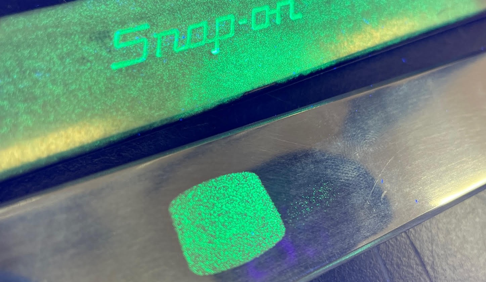

Technology Highlights
Patented and patent‑pending technologies that enhance safety, readiness, and repair capability.
The Glowing Tools Project
The Glowing Tools Project integrates Glow Powder technology into maintenance tools and components,
enabling rapid visual verification under UV light. This enhances safety, reduces error, and supports
mission readiness in low‑light and complex maintenance environments.

Glow Powder–enhanced tools under UV illumination, supporting safety and mission readiness.
Durable Metal Electroplating Composite
US Patent US20200325394A1 covers a durable metal electroplating composite that has
passed NAWCAD engineering tests for corrosion, adhesion, abrasion, and aircraft fluid exposure.
This technology provides robust protection for critical aircraft components.

Fluorescent Glow Powder on a tool surface, illustrating coating adhesion and inspection capability.
Cold Spray Aircraft Repair
US Patent US20240182723A1 (application pending) focuses on cold spray aircraft repair
methods that integrate advanced materials and Glow Powder technology. These solutions enable
structurally sound, visually verifiable repairs that support long‑term sustainment.